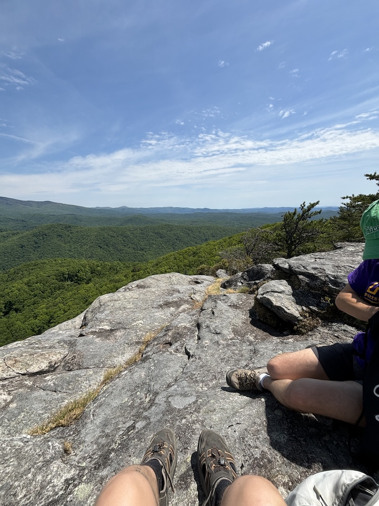
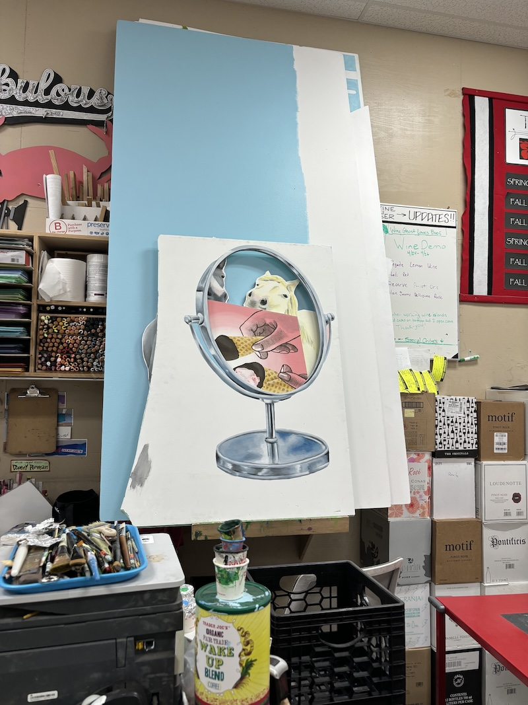
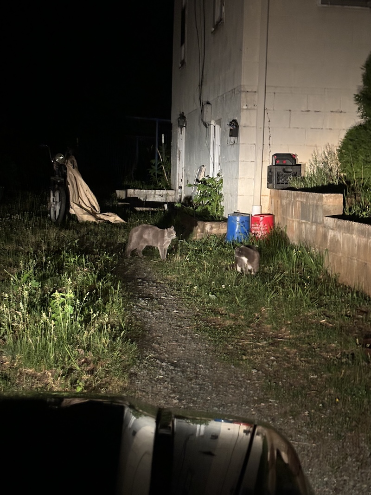
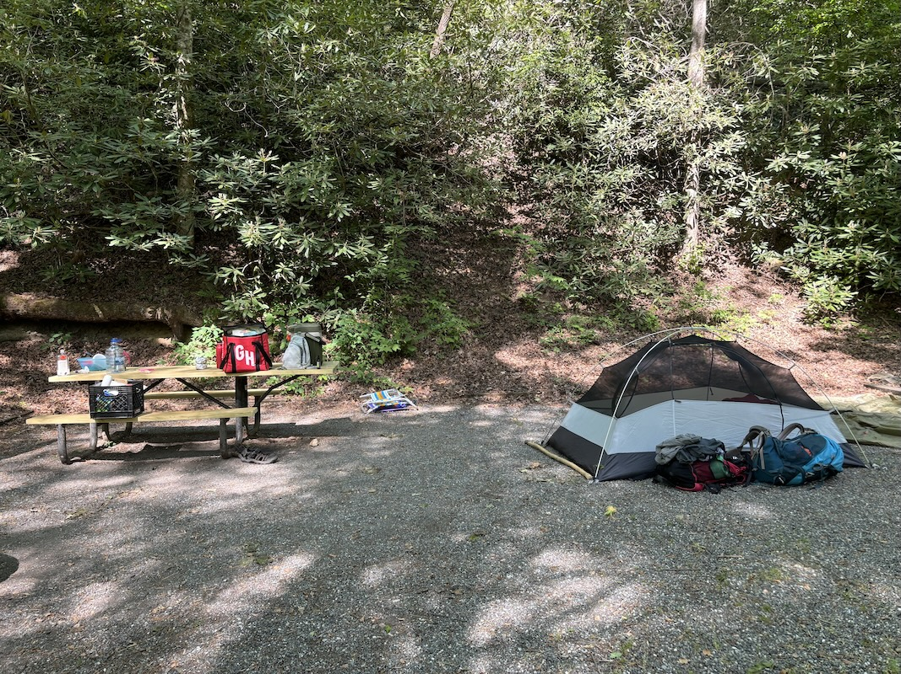
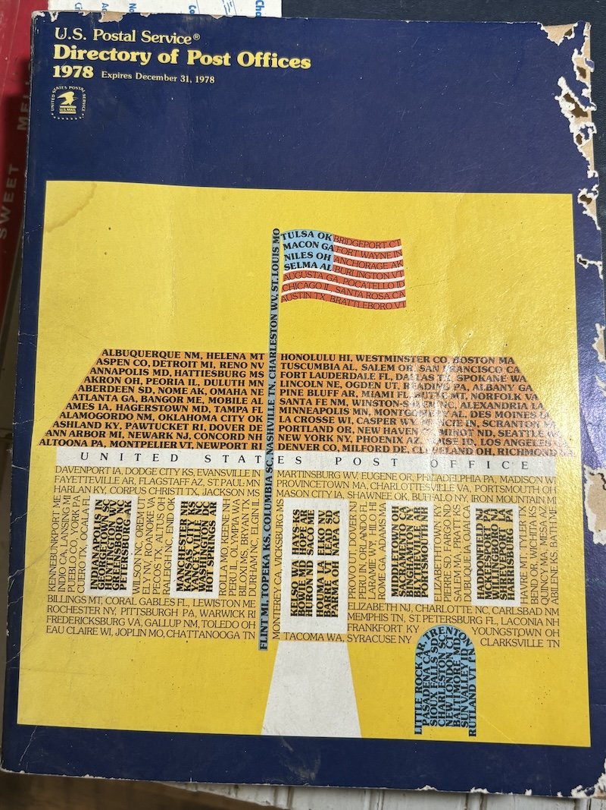

MAY 2026
- Many days it makes no difference. I try to account for the lack of difference. I try to extinguish the days from each other, and in the process, I am extinguished. All the food we get rid of has to be accounted for.
- Poached ; Keep it Hidden ; Drop-Down Menu ; The gray in between ; Her beige espadrilles
- "As for the scrappy parking lot trees, you are full of tenderness for the feminine in them." - LR
- "Your concept is clear: to practice dreaming, then to dream, then to make a record" - LR (forever..)
- RED PAIL / BLUE BUCKET
- Universal Tray
- Dump No Waste
- Never → To → Shove → It → Never →
The manager of the visitor center points out his neighbor who has Alzheimer’s to us. He says, “It’s so sad, she has Alzheimer’s.” She’s walking a grey toy poodle along the gravel road. The whole area is devastated, and there’s lots of men in tactical gear fly fishing. We just want to find a place to swim. // The day before, the shopkeeper asks A to help him resituate himself in his wheelchair; he says we can pet his hen, and he tells me that I look like his granddaughter. // [REDACTED]. // The manager of the visitor center offers to give us a ride. He keeps talking about his photography and his award-winning photos of trout. He shows us landscape scenes, and I’m moved by this desire to be seen, to connect, to have one’s art reach another. On the drive, he spends most of the time pointing out the destruction from hurricane Helene. He tells us that in the early 20th century, a railroad ran through this town. He tells us that during a different historic flood, one house was carried all the way across town. // I want to be receptive to life and generous to the people I meet. // At some point during the drive, he unlocks his phone to show us more of his photography. He’s eager for us to see photos of his models, and they’re these cheap looking pictures of women wearing tight white sweaters against fall foliage, bikini tops and mermaid tails half-submerged in water. // I feel my body take on more of its shape, or I guess I mean I become more conscious of my body; I’m insecure and experience a diffuse fear. // Throughout the rest of the interaction, I’m mostly preoccupied with my confusion about the nature of these transactions with his models; who is paying who? Does this man pay these models, taking photos of them to build his portfolio? Or do the models pay him to take these photos, so that they can build their portfolios? He’s taken photos of his friend’s daughter. He shows us one girl who’s “fifteen but looks twentyfive.” I become more conscious of my body. // He keeps mentioning building a bonfire and watching a movie on a projector, and he invites us to join him. I politely sidestep the offer. This man has been very kind to us. I want to be receptive to life and generous to the people I meet. I don’t want to be preoccupied by the photographs of these women, but holding his phone and swiping through these images, I feel my body take on more of its shape. Why do I have to feel my body like this?




